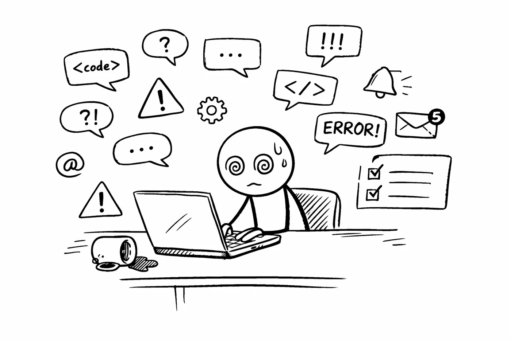
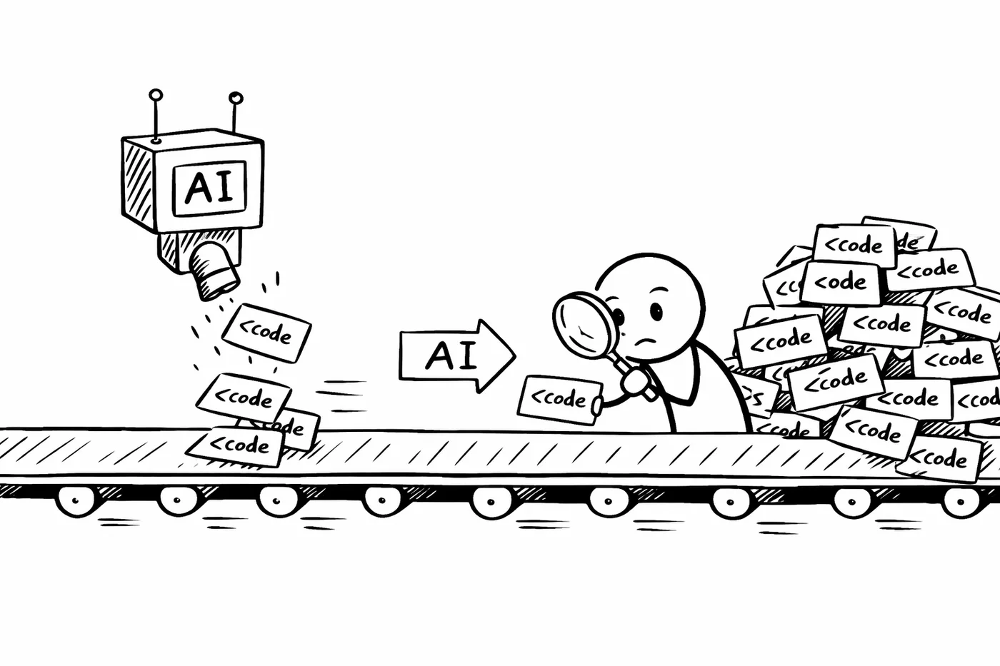
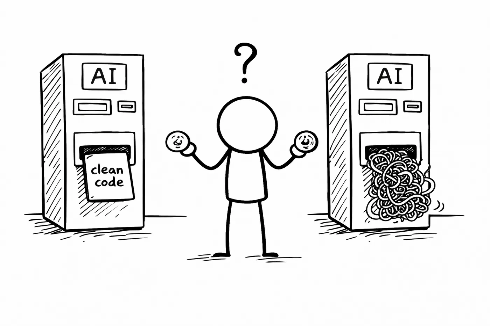
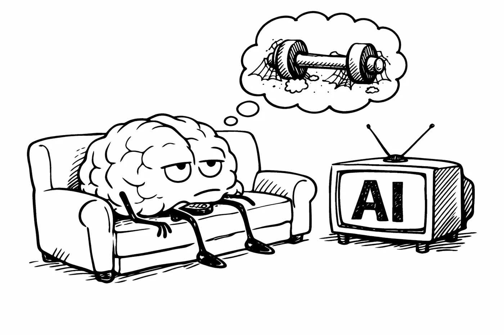
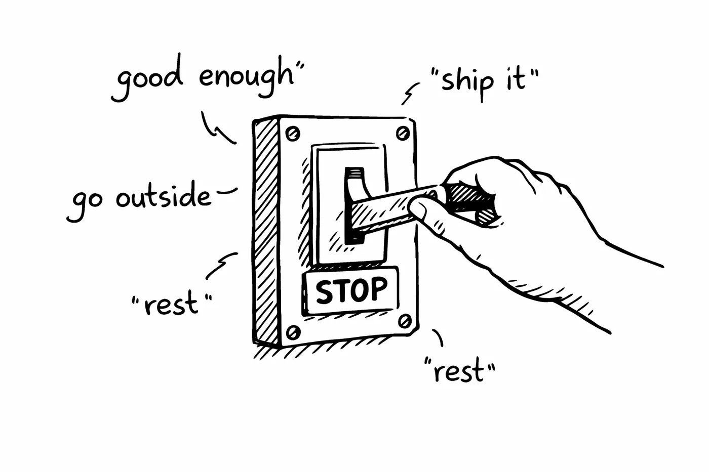

AI fatigue is real and nobody talks about it
I shipped more code last quarter than any quarter in my career. I also felt more drained than any quarter in my career. These two facts are not unrelated.
I build AI agent infrastructure for a living. I'm one of the core maintainers of OpenFGA (CNCF Incubating), I built agentic-authz for agent authorization, I built Distill for context deduplication, I shipped MCP servers. I'm not someone who dabbles with AI on the side. I'm deep in it. I build the tools that other engineers use to make AI agents work in production.
And yet, I hit a wall. The kind of exhaustion that no amount of tooling or workflow optimization could fix.
If you're an engineer who uses AI daily - for design reviews, code generation, debugging, documentation, architecture decisions - and you've noticed that you're somehow more tired than before AI existed, this post is for you. You're not imagining it. You're not weak. You're experiencing something real that the industry is aggressively pretending doesn't exist. And if someone who builds agent infrastructure full-time can burn out on AI, it can happen to anyone.
I want to talk about it honestly. Not the "AI is amazing and here's my workflow" version. The real version. The one where you stare at your screen at 11pm, surrounded by AI-generated code you still need to review, wondering why the tool that was supposed to save you time has consumed your entire day.

The paradox nobody warned us about
Here's the thing that broke my brain for a while: AI genuinely makes individual tasks faster. That's not a lie. What used to take me 3 hours now takes 45 minutes. Drafting a design doc, scaffolding a new service, writing test cases, researching an unfamiliar API. All faster.
But my days got harder. Not easier. Harder.
The reason is simple once you see it, but it took me months to figure out. When each task takes less time, you don't do fewer tasks. You do more tasks. Your capacity appears to expand, so the work expands to fill it. And then some. Your manager sees you shipping faster, so the expectations adjust. You see yourself shipping faster, so your own expectations adjust. The baseline moves.
Before AI, I might spend a full day on one design problem. I'd sketch on paper, think in the shower, go for a walk, come back with clarity. The pace was slow but the cognitive load was manageable. One problem. One day. Deep focus.
Now? I might touch six different problems in a day. Each one "only takes an hour with AI." But context-switching between six problems is brutally expensive for the human brain. The AI doesn't get tired between problems. I do.
This is the paradox: AI reduces the cost of production but increases the cost of coordination, review, and decision-making. And those costs fall entirely on the human.
You became a reviewer and you didn't sign up for it

Before AI, my job was: think about a problem, write code, test it, ship it. I was the creator. The maker. That's what drew most of us to engineering in the first place - the act of building.
After AI, my job increasingly became: prompt, wait, read output, evaluate output, decide if output is correct, decide if output is safe, decide if output matches the architecture, fix the parts that don't, re-prompt, repeat. I became a reviewer. A judge. A quality inspector on an assembly line that never stops.
This is a fundamentally different kind of work. Creating is energizing. Reviewing is draining. There's research on this - the psychological difference between generative tasks and evaluative tasks. Generative work gives you flow states. Evaluative work gives you decision fatigue.
I noticed it first during a week where I was using AI heavily for a new microservice. By Wednesday, I couldn't make simple decisions anymore. What should this function be named? I didn't care. Where should this config live? I didn't care. My brain was full. Not from writing code - from judging code. Hundreds of small judgments, all day, every day.
The cruel irony is that AI-generated code requires more careful review than human-written code. When a colleague writes code, I know their patterns, their strengths, their blind spots. I can skim the parts I trust and focus on the parts I don't. With AI, every line is suspect. The code looks confident. It compiles. It might even pass tests. But it could be subtly wrong in ways that only surface in production, under load, at 3am.
So you read every line. And reading code you didn't write, that was generated by a system that doesn't understand your codebase's history or your team's conventions, is exhausting work.
This is also why I think agent security and authorization matter so much. If we can't review everything AI produces - and we can't, not at scale - then we need systems that constrain what agents can do in the first place. Least-privilege access, scoped tokens, audit trails. The less you have to worry about "did the AI do something dangerous," the more cognitive budget you have for the work that actually matters. This isn't just a security problem. It's a human sustainability problem.
The nondeterminism problem
Engineers are trained on determinism. Same input, same output. That's the contract. That's what makes debugging possible. That's what makes reasoning about systems possible.
AI broke that contract.

I had a prompt that worked perfectly on Monday. Generated clean, well-structured code for an API endpoint. I used the same prompt on Tuesday for a similar endpoint. The output was structurally different, used a different error handling pattern, and introduced a dependency I didn't ask for.
Why? No reason. Or rather, no reason I can access. There's no stack trace for "the model decided to go a different direction today." There's no log that says "temperature sampling chose path B instead of path A." It just... happened differently.
For someone whose entire career is built on "if it broke, I can find out why," this is deeply unsettling. Not in a dramatic way. In a slow, grinding, background-anxiety way. You can never fully trust the output. You can never fully relax. Every interaction requires vigilance.
I tried to fight this. I version-controlled my prompts. I built elaborate system messages. I created templates. Some of it helped. None of it solved the fundamental problem: you are collaborating with a probabilistic system, and your brain is wired for deterministic ones. That mismatch is a constant, low-grade source of stress.
This frustration is actually what led me to build Distill - deterministic context deduplication for LLMs. No LLM calls, no embeddings, no probabilistic heuristics. Pure algorithms that clean your context in ~12ms. I wanted at least one part of the AI pipeline to be something I could reason about, debug, and trust. If the model's output is going to be nondeterministic, the least I can do is make sure the input is clean and predictable.
The engineers I've talked to who handle this best are the ones who've made peace with it. They treat AI output like a first draft from a smart but unreliable intern. They expect to rewrite 30% of it. They budget time for that rewriting. They don't get frustrated when the output is wrong because they never expected it to be right. They expected it to be useful. There's a difference.
The FOMO treadmill
Take a breath and try to keep up with just the last few months. Claude Code ships sub-agents, then skills, then an Agent SDK, then Claude Cowork. OpenAI launches Codex CLI, then GPT-5.3-Codex - a model that literally helped code itself. New coding agents announce background mode with hundreds of concurrent autonomous sessions. Google drops Gemini CLI. GitHub adds an MCP Registry. Acquisitions happen weekly. Amazon Q Developer gets agentic upgrades. CrewAI, AutoGen, LangGraph, MetaGPT - pick your agent framework, there's a new one every week. Google announces A2A (Agent-to-Agent protocol) to compete with Anthropic's MCP. OpenAI ships its own Swarm framework. Kimi K2.5 drops with agent swarm architecture orchestrating 100 parallel agents. "Vibe coding" becomes a thing. OpenClaw launches a skills marketplace and within one week, researchers find 400+ malicious agent skills uploaded to ClawHub. And somewhere in the middle of all this, someone on LinkedIn posts "if you're not using AI agents with sub-agent orchestration in 2026, you're already obsolete."
That's not a year. That's a few months. And I'm leaving stuff out.
I fell into this trap hard. I was spending weekends evaluating new tools. Reading every changelog. Watching every demo. Trying to stay at the frontier because I was terrified of falling behind.
Here's what that actually looked like: I'd spend Saturday afternoon setting up a new AI coding tool. By Sunday I'd have a basic workflow. By the following Wednesday, someone would post about a different tool that was "way better." I'd feel a pang of anxiety. By the next weekend, I'd be setting up the new thing. The old thing would sit unused. One coding assistant to the next to the next and back to the first one. Each migration cost me a weekend and gave me maybe a 5% improvement that I couldn't even measure properly.
Multiply this by every category - coding assistants, chat interfaces, agent frameworks, multi-agent orchestration platforms, MCP servers, context management tools, prompt libraries, swarm architectures, skills marketplaces - and you get a person who is perpetually learning new tools and never getting deep with any of them. The Hacker News front page alone is enough to give you whiplash. One day it's "Show HN: Autonomous Research Swarm" and the next it's "Ask HN: How will AI swarms coordinate?" Nobody knows. Everyone's building anyway.
The worst part is the knowledge decay. I spent two weeks building a sophisticated prompt engineering workflow in early 2025. Carefully crafted system prompts, few-shot examples, chain-of-thought templates. It worked well. Three months later, the model updated, the prompting best practices shifted, and half my templates produced worse results than a simple one-liner. Those two weeks were gone. Not invested. Spent. The same thing happened with my MCP server setup - I built five custom servers (Dev.to publisher, Apple Notes integration, Python and TypeScript sandboxes, more), then the protocol evolved, then the MCP Registry launched on GitHub and suddenly there were thousands of pre-built ones. Some of my custom work became redundant overnight.
The agent framework churn is even worse. I watched teams go from LangChain to CrewAI to AutoGen to custom orchestration in the span of a year. Each migration meant rewriting integrations, relearning APIs, rebuilding workflows. The people who waited and did nothing often ended up in a better position than the people who adopted early and had to migrate twice.
I've since adopted a different approach. Instead of chasing every new tool, I go deep on the infrastructure layer underneath them. Tools come and go. The problems they solve don't. Context efficiency, agent authorization, audit trails, runtime security - these are durable problems regardless of which framework is trending this month. That's why I built agentic-authz on OpenFGA instead of tying it to any specific agent framework. That's why Distill works at the context level, not the prompt level. Build on the layer that doesn't churn.
I still track the landscape closely - you have to when you're building infrastructure for it. But I track it to understand where the ecosystem is going, not to adopt every new thing. There's a difference between being informed and being reactive.
The "just one more prompt" trap
This one is insidious. You're trying to get AI to generate something specific. The first output is 70% right. So you refine your prompt. The second output is 75% right but broke something the first one had correct. Third attempt: 80% right but now the structure is different. Fourth attempt: you've been at this for 45 minutes and you could have written the thing from scratch in 20.
I call this the prompt spiral. It's the AI equivalent of yak shaving. You started with a clear goal. Thirty minutes later you're debugging your prompt instead of debugging your code. You're optimizing your instructions to a language model instead of solving the actual problem.
The prompt spiral is especially dangerous because it feels productive. You're iterating. You're getting closer. Each attempt is slightly better. But the marginal returns are diminishing fast, and you've lost sight of the fact that the goal was never "get the AI to produce perfect output." The goal was to ship the feature.
I now have a hard rule: three attempts. If the AI doesn't get me to 70% usable in three prompts, I write it myself. No exceptions. This single rule has saved me more time than any prompting technique I've ever learned.
Perfectionism meets probabilistic output
Engineers tend toward perfectionism. We like clean code. We like tests that pass. We like systems that behave predictably. This is a feature, not a bug - it's what makes us good at building reliable software.
AI output is never perfect. It's always "pretty good." 70-80% there. The variable names are slightly off. The error handling is incomplete. The edge cases are ignored. The abstraction is wrong for your codebase. It works, but it's not right.
For a perfectionist, this is torture. Because "almost right" is worse than "completely wrong." Completely wrong, you throw away and start over. Almost right, you spend an hour tweaking. And tweaking AI output is uniquely frustrating because you're fixing someone else's design decisions - decisions that were made by a system that doesn't share your taste, your context, or your standards.
I had to learn to let go. Not of quality - I still care about quality. But of the expectation that AI would produce quality. I now treat every AI output as a rough draft. A starting point. Raw material. I mentally label it "draft" the moment it appears, and that framing change alone reduced my frustration by half.
The engineers who struggle most with AI are often the best engineers. The ones with the highest standards. The ones who notice every imperfection. AI rewards a different skill: the ability to extract value from imperfect output quickly, without getting emotionally invested in making it perfect.
The thinking atrophy

This is the one that scares me most.
I noticed it during a design review meeting. Someone asked me to reason through a concurrency problem on the whiteboard. No laptop. No AI. Just me and a marker. And I struggled. Not because I didn't know the concepts - I did. But because I hadn't exercised that muscle in months. I'd been outsourcing my first-draft thinking to AI for so long that my ability to think from scratch had degraded.
It's like GPS and navigation. Before GPS, you built mental maps. You knew your city. You could reason about routes. After years of GPS, you can't navigate without it. The skill atrophied because you stopped using it.
The same thing is happening with AI and engineering thinking. When you always ask AI first, you stop building the neural pathways that come from struggling with a problem yourself. The struggle is where learning happens. The confusion is where understanding forms. Skip that, and you get faster output but shallower understanding.
I now deliberately spend the first hour of my day without AI. I think on paper. I sketch architectures by hand. I reason through problems the slow way. It feels inefficient. It is inefficient. But it keeps my thinking sharp, and that sharpness pays dividends for the rest of the day when I do use AI - because I can evaluate its output better when my own reasoning is warmed up.
The comparison trap
Social media is full of people who seem to have AI figured out. They post their workflows. Their productivity numbers. Their "I built this entire app in 2 hours with AI" threads. And you look at your own experience - the failed prompts, the wasted time, the code you had to rewrite - and you think: what's wrong with me?
Nothing is wrong with you. Those threads are highlight reels. Nobody posts "I spent 3 hours trying to get Claude to understand my database schema and eventually gave up and wrote the migration by hand." Nobody posts "AI-generated code caused a production incident because it silently swallowed an error." Nobody posts "I'm tired."
The comparison trap is amplified by the fact that AI skill is hard to measure. With traditional engineering, you can look at someone's code and roughly gauge their ability. With AI, the output depends on the model, the prompt, the context, the temperature, the phase of the moon. Someone's impressive demo might not reproduce on your machine with your codebase.
I became much more selective about AI content on social media. I still follow the space closely - I have to, it's my job. But I shifted from consuming everyone's hot takes to focusing on people who are actually building and shipping, not just demoing. The ratio of signal to anxiety matters. If a feed is making you feel behind instead of informed, it's not serving you.
What actually helped
I'll be specific about what changed my relationship with AI from adversarial to sustainable.
Time-boxing AI sessions. I don't use AI in an open-ended way anymore. I set a timer. 30 minutes for this task with AI. When the timer goes off, I ship what I have or switch to writing it myself. This prevents the prompt spiral and the perfectionism trap simultaneously.
Separating AI time from thinking time. Morning is for thinking. Afternoon is for AI-assisted execution. This isn't rigid - sometimes I break the rule. But having a default structure means my brain gets both exercise and assistance in the right proportions.
Accepting 70% from AI. I stopped trying to get perfect output. 70% usable is the bar. I'll fix the rest myself. This acceptance was the single biggest reducer of AI-related frustration in my workflow.
Being strategic about the hype cycle. I track the AI landscape because I build infrastructure for it. But I stopped adopting every new tool the week it launches. I use one primary coding assistant and know it deeply. I evaluate new tools when they've proven themselves over months, not days. Staying informed and staying reactive are different things.
Logging where AI helps and where it doesn't. I kept a simple log for two weeks: task, used AI (yes/no), time spent, satisfaction with result. The data was revealing. AI saved me significant time on boilerplate, documentation, and test generation. It cost me time on architecture decisions, complex debugging, and anything requiring deep context about my codebase. Now I know when to reach for it and when not to.
Not reviewing everything AI produces. This was hard to accept. But if you're using AI to generate large amounts of code, you physically cannot review every line with the same rigor. I focus my review energy on the parts that matter most - security boundaries, data handling, error paths - and rely on automated tests and static analysis for the rest. Some roughness in non-critical code is acceptable.
The sustainability question
The tech industry has a burnout problem that predates AI. AI is making it worse, not better. Not because AI is bad, but because AI removes the natural speed limits that used to protect us.
Before AI, there was a ceiling on how much you could produce in a day. That ceiling was set by typing speed, thinking speed, the time it takes to look things up. It was frustrating sometimes, but it was also a governor. You couldn't work yourself to death because the work itself imposed limits.
AI removed the governor. Now the only limit is your cognitive endurance. And most people don't know their cognitive limits until they've blown past them.
I burned out in late 2025. Not dramatically - I didn't quit or have a breakdown. I just stopped caring. Code reviews became rubber stamps. Design decisions became "whatever AI suggests." I was going through the motions, producing more than ever, feeling less than ever. It took me a month to realize what had happened and another month to recover.
The recovery wasn't about using less AI. It was about using AI differently. With boundaries. With intention. With the understanding that I am not a machine and I don't need to keep pace with one. Working at Ona helped me see this clearly - when you're building AI agent infrastructure for enterprise customers, you see the human cost of unsustainable AI workflows at scale. The problems aren't just personal. They're systemic. And they need to be solved at the tooling level, not just the individual level.
Ironically, the burnout period is when some of my best work happened. When I stopped trying to use every AI tool and started thinking about what was actually broken, I saw the problems clearly for the first time. Context windows filling up with garbage - that became Distill. Agents with all-or-nothing API key access - that became agentic-authz. The inability to audit what an agent actually did - that's becoming AgentTrace. The fatigue forced me to stop consuming and start building. Not building more features faster, but building the right things deliberately.
The real skill
Here's what I think the real skill of the AI era is. It's not prompt engineering. It's not knowing which model to use. It's not having the perfect workflow.
It's knowing when to stop.

Knowing when the AI output is good enough. Knowing when to write it yourself. Knowing when to close the laptop. Knowing when the marginal improvement isn't worth the cognitive cost. Knowing that your brain is a finite resource and that protecting it is not laziness - it's engineering.
We optimize our systems for sustainability. We add circuit breakers. We implement backpressure. We design for graceful degradation. We should do the same for ourselves.
AI is the most powerful tool I've ever used. It's also the most draining. Both things are true. The engineers who thrive in this era won't be the ones who use AI the most. They'll be the ones who use it the most wisely.
If you're tired, it's not because you're doing it wrong. It's because this is genuinely hard. The tool is new, the patterns are still forming, and the industry is pretending that more output equals more value. It doesn't. Sustainable output does.
I'm still building in this space every day. Agent authorization, context engineering, audit trails, runtime security - the infrastructure that makes AI agents actually work in production. I wrote everything I've learned into the Agentic Engineering Guide - from auth patterns to audit trails, the hard problems nobody talks about. I'm more committed to AI than ever. But I'm committed on my terms, at my pace, building things that matter instead of chasing things that trend.
Get the Agentic Engineering Guide →
Take care of your brain. It's the only one you've got, and no AI can replace it.
If this resonated, I'd love to hear your experience. What does AI fatigue look like for you? Find me on X or LinkedIn, or join the discussion on Hacker News.
I write about AI agent infrastructure, security, context engineering, and the human side of building with AI. You can find all my writing on my writing page.